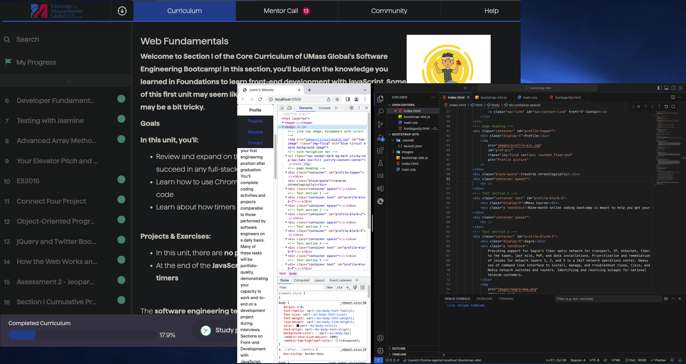
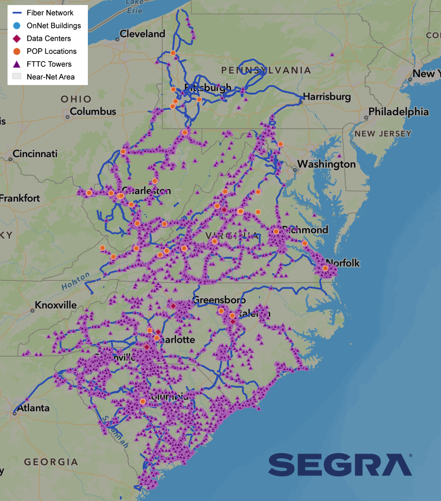

Profile
(reverse chronologically)
UMass Course
Nine-month online coding bootcamp is meant to help you get your first
engineering position after graduation. You'll complete coding activities and
projects comparable to those performed by software engineers on a daily basis.
Many of these tasks will be portfolio-quality, demonstrating your capacity to
work end-to-end on a development project during interviews. Sections on
Front-end Development with JavaScript, Back-end Development with Python and
Flask, Back-end Development with Node.js, Front-end Development with React.js,
and Data Structures and Algorithms

Segra
Providing support for Segra's fiber optic network for transport, IP, ethernet,
fiber to the tower, last mile, PoP, and data installations. Prioritization and
remediation of issues for network layers 1, 2, and 3 in a 24x7 network
operations center. Heavy use of command line interface to install, manage, and
troubleshoot Ciena, Cisco, and Nokia network switches and routers. Identifying
and resolving outages for national telecom customers.

U of SC
Rigorous curriculum teaching the skills and knowledge required to design,
develop, test, and produce computer programs. Focussed on writing programs in
Java and C++. Included upper level calculus, a thorough understanding of
algorithms, modern coding practices & networking.
Arabic Linguist
After being approved for TS//SCI clearance, I worked in a sensitive
compartmented information facility (SCIF) on Fort Gordon, Georgia. Day to day
work involved: Monitoring, translating, and transcribing foreign language
communications, preparing formal intelligence reports for dissemination to the
Intelligence Community. Developing previously unexploited sources of
intelligence. Coordinating with peers across the US to verify and disseminate
information. Referencing news reports, legal documents, and published works to
verify intelligence. Providing leadership, guidance, and training to junior
personnel.

I also had the opportunity to complete the USMC Martial Arts Instructor (MAI)
course at Fort Gordon, and the Water Survival - Advanced course at Camp Lejeune,
NC.
Marines
After completing Basic Training on Parris Island, SC, I flew across the country
to the Defense Language Institute Foreign Language Center in Monterey,
California. DLIFLC trains members of all four branches of the military, the
Coast Guard, and the State Department in mission-relevant foereign languages.
The Middle East School provide 64-weeks of instruction in Modern Standard Arabic
(MSA) in the Egyptian, Iraqi, and Levantine dialects. Dialects are taught from
the beginning in the classroom, along with foundational MSA each day. A key
component of DLIFLC's success in teaching foreign language so effectively is the
highly educated faculty who are motivated to teach their language and culture to
American students. The instructors, 98 percent of whom are native speakers of
the language they teach, take great pride in preparing students to serve their
country.